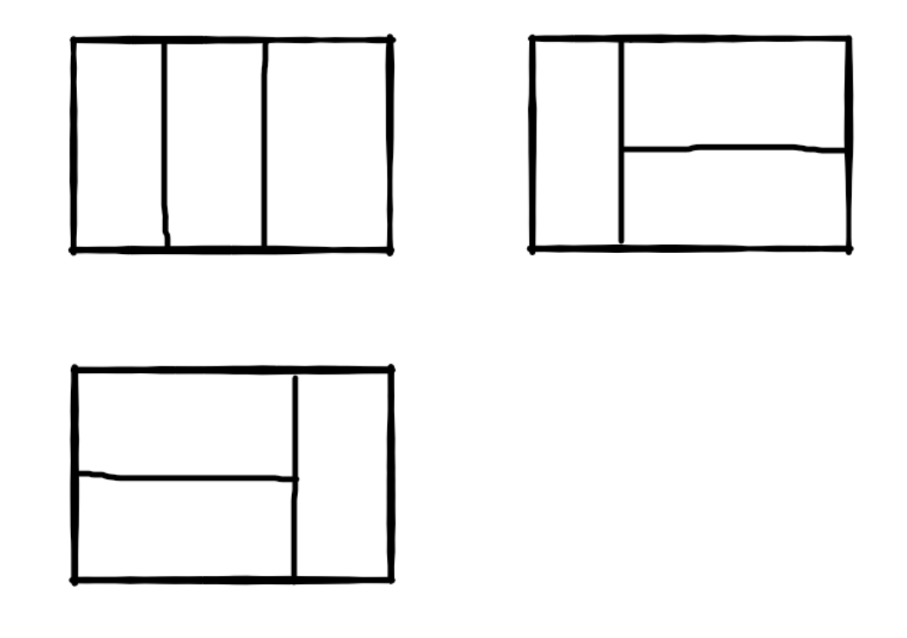

(1)旋转数组的最小数字
题目描述
把一个数组最开始的若干个元素搬到数组的末尾，我们称之为数组的旋转。
输入一个非递减排序的数组的一个旋转，输出旋转数组的最小元素。
例如数组{3,4,5,1,2}为{1,2,3,4,5}的一个旋转，该数组的最小值为1。
NOTE：给出的所有元素都大于0，若数组大小为0，请返回0
java
1 | public int minNumberInRotateArray(int [] array) { |
思路&&总结
摘牛课评论区大佬的总结，非常到位。
链接：https://www.nowcoder.com/questionTerminal/9f3231a991af4f55b95579b44b7a01ba?f=discussion
来源：牛客网
采用二分法解答这个问题，
mid = low + (high - low)/2
需要考虑三种情况：
(1)array[mid] > array[high]:
出现这种情况的array类似[3,4,5,6,0,1,2]，此时最小数字一定在mid的右边。
low = mid + 1
(2)array[mid] == array[high]:
出现这种情况的array类似 [1,0,1,1,1] 或者[1,1,1,0,1]，此时最小数字不好判断在mid左边
还是右边,这时只好一个一个试 ，
high = high - 1
(3)array[mid] < array[high]:
出现这种情况的array类似[2,2,3,4,5,6,6],此时最小数字一定就是array[mid]或者在mid的左
边。因为右边必然都是递增的。
high = mid
注意这里有个坑：如果待查询的范围最后只剩两个数，那么mid 一定会指向下标靠前的数字
比如 array = [4,6]
array[low] = 4 ;array[mid] = 4 ; array[high] = 6 ;
如果high = mid - 1，就会产生错误， 因此high = mid
但情形(1)中low = mid + 1就不会错误
(2)斐波那契数列
题目描述
大家都知道斐波那契数列，现在要求输入一个整数n，请你输出斐波那契数列的第n项（从0开始，第0项为0）。
n<=39
java
1 | public int Fibonacci(int n) { |
1 | public int Fibonacci(int n) { |
思路&&总结
略。
(3)跳台阶
题目描述
一只青蛙一次可以跳上1级台阶，也可以跳上2级。求该青蛙跳上一个n级的台阶总共有多少种跳法（先后次序不同算不同的结果）。
java
1 | public int JumpFloor(int target) { |
思路&&总结
略。
(3)变态跳台阶
题目描述
一只青蛙一次可以跳上1级台阶，也可以跳上2级……它也可以跳上n级。求该青蛙跳上一个n级的台阶总共有多少种跳法。
java
1 | public int JumpFloorII(int n) { |
思路&&总结
跳n阶可能步骤 -> 一次跳n阶【1种】
跳1阶 + 跳n-1阶【共JumpFloorII（n-1）种】
跳n-1阶 + 跳1阶【共JumpFloorII（n-1）种】
所以递归公式：JumpFloorII(n) = 1 + 2*JumpFloorII(n-1) - 1
减一是因为全跳1步被重复计算了一次
(4)矩阵覆盖
题目描述
我们可以用2×1的小矩形横着或者竖着去覆盖更大的矩形。
请问用n个2×1的小矩形无重叠地覆盖一个2×n的大矩形，总共有多少种方法？
比如n=3时，2*3的矩形块有3种覆盖方法：

java
1 | public int RectCover(int target) { |
思路&&总结
同（2）略。